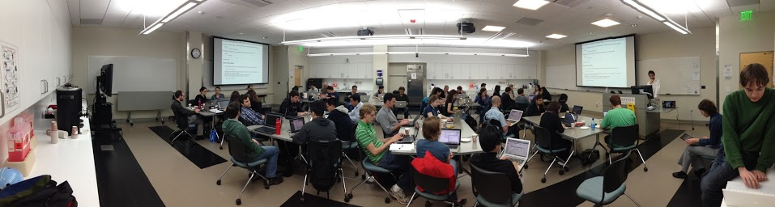

On May 6th-7th, we hosted a bootcamp at Stanford University. Participants were students, post-docs and staff affiliated with the Center for Neurobiological and Cognitive Imaging and the Neuroscience Graduate Program and both units provided support for the workshop. Bob Dougherty, the research director at the CNI, helped raise a substantial portion of the funds to support the bootcamp (coffee!) and Prof. Miriam Goodman, from the Department of Molecular and Cellular Physiology, helped to get the neuroscience program on board and to secure additional funding from that program. Prof. Goodman was a participant in a SWC bootcamp at Berkeley last year and was eager to get SWC to Stanford. Instructors were Paul Ivanov, Bernhard Konrad and myself.

Considering that the students were a rather homegenous group in terms of their scientific interests (the brain!), there were a variety of backgrounds in terms of their knowledge about computers. Matching instruction to the level of knowledge (based on a pre-workshop questionnaire) was a challenge. As were installation issues that plagued the first day. A large majority of participants failed to follow the instructions provided by the Anaconda Python distribution to configure their bash shell environment. I guess that just goes to show that they needed the workshop.
The instruction followed the standard bootcamp plan for most of the two days: unix shell, version control with git, python programming, and so forth. In the last two-hour session of the work-shop we conducted a little experiment. Adapting a lesson plan from Justin Kitzes' recent UC Berkeley bootcamp, we taught a session aimed at teaching the students how to combine all the components of the previous parts (shell, git and programming) to create a reproducible research project. To make things more interesting, we used a publically available neuroscience data set. We demonstrated how one would load the data from the files comprising this data-set into an IPython notebook and performed a rather basic calculation on it, visualizing various quantities as we went along.
Demonstrating one possible work-flow, we started by working interactively in the notebook, exploring the data as we went along. We demonstrated how bits of an exploratory data analysis session can turn into function definitions. Then, we showed how you would write modules based on these function, tests for the modules, commit them as a git repo and start putting together a push-button analysis. We reached the end of all this a little bit out-of-breath and it is not obvious that everyone managed to follow through every step of the session, but I do believe that the most important point came across: reproducible research is important and, with the help of the tools we teach, eminently possible.
We used this etherpad to comminucate with students througout the workshop and to gather feedback at the end of each half-day. You can see a list of the participants at the top and the feedback strewn throughout. At the very end of the workshop, we asked them to write down their feedback for the entire workshop. Many took the time to write some thoughtful comments (for which we are grateful!). I have selected a couple of interesting points from the feedback we got. This one is quite encouraging:
great workshop. i appreciated the backround and theory as well as the more practical examples. i think you did a nice job presenting this information to students of various levels. might be helpful to make it clear what level this class is for - some people had no coding backround, others were quite experienced. maybe a quick survey in the beginning and maybe some work in groups to accodmidate the different levels. i really appreciated your humor and positive attitude:)
On the other hand, this one is a bit discouraging:
I'm very grateful that you all volunteer your time to do this. But, I think you can/should be paid for it. There's money around for such things, many of our PIs would be happy to fork up a few hundred bucks, and in general I think the culture of doing good work for free in academia is deleterious to our collective financial well-bring.+4
The '+4' at the end of that comment represents the fact that four additional people expressed their support to that point. I wonder whether this notion is due to the local hyper-capitalistic culture surrounding Stanford, and I am curious to hear what other instructors think about this. My personal response, also in line with some other aspects of the local culture, is that Software Carpentry is just one more way to create more value than we capture.
When the workshop was over, Paul, Bernhard and I took a long walk. Prof. Goodman had kindly invited us to her house in Menlo Park for post-workshop pizza and socializing. On the way over, we took the opportunity to go over the sessions one-by-one and reflect on them. For each session, each one of us in turn said what they think worked and what didn't work. It was very useuful to get feedback from the other instructors, to rehash the mistakes and the successes and to be able to imagine what we would do differently in future workshops. One of the main sentiments in the air was that we were not sure whether we had really managed to "seal the deal", to get students to actually start using the things we had shown them in their day-to-day life. Fortunately, I have the email addresses of participants. In a couple of months, I will circle back and ask them to fill another set of evaluations and (assuming anyone responds) see whether they have adopted any of it into their day-to-day research life.
Originally posted 2013-05-16 by Ariel Rokem in Stanford University.
comments powered by Disqus